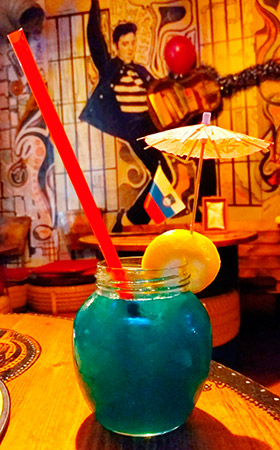
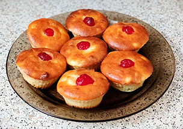
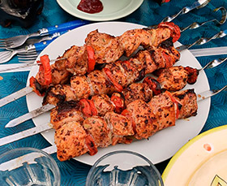

КОНКУРС

Напиток в бокале. Коктейли бывают алкогольные и безалкогольные. Вечеринки, на которых распивают коктейли, называют «коктейльными». Такие вечеринки распространены в дипломатической и элитизированной среде и описаны в художественной литературе.
с 01.01.2000 по 32.05.2020
УЧАСТВОВАТЬ

Сырники

Шашлык из свежего мяса по традиционному домашнему рецепту, жаренный на открытом огне